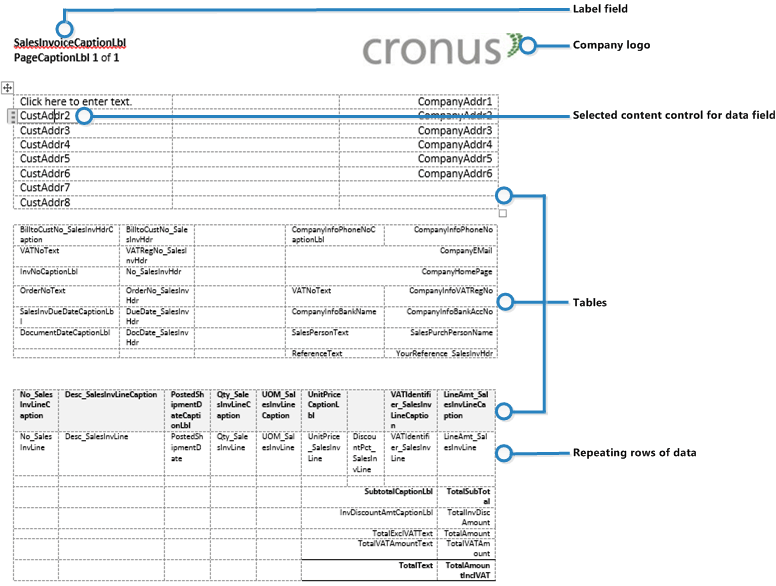

Managing Report and Document Layouts
A report layout controls content and format of the report, including which data fields of a report dataset appear on the report and how they are arranged, text style, images, and more. From Business Central, you can change which layout is used on a report, create new layout, or modify the existing layouts.
Note
In Business Central, the term "report" also covers externally-facing documents, such as sales invoices and order confirmations that you send to customers as PDF files.
In particular, a report layout sets up the following:
- The label and data fields to include from the dataset of the Business Central report.
- The text format, such as font type, size, and color.
- The company logo and its position.
- General page settings, such as margins and background images.
A report can be set up with multiple report layouts, which you can switch among as required. You can use one of the built-in report layouts or you can create custom report layouts and assign them to your reports as needed. For more information, see Create a Custom Report or Document Layout.
There are two types of report layouts that you can use on reports; Word and RDLC.
Word report layout overview
A Word report layout is a based on Word document (.docx file type). Word report layouts enable you to design report layouts by using Microsoft Word 2013 or later. A Word report layout determines the report's content - controlling how that content elements are arranged and how they look. A Word report layout document will typically use tables to arrange content, where the cells can contain data fields, text, or pictures.

RDLC layout overview
RDLC layouts are based on client report definition layouts (.rdlc or .rdl file types). These layouts are created and modified by using SQL Server Report Builder. The design concept for RDLC layouts is similar to Word layouts, where the layout defines the general format of the report and determines the fields from the dataset to include. Designing RDLC layouts is more advanced than Word layouts. For more information, see Designing RDLC Report Layouts.
Built-in and custom report layouts
Business Central includes several built-in layouts. Built-in layouts are predefined layouts that are designed for specific reports. Business Central reports will have a built-in layout as either an RDLC report layout, Word report layout, or in some cases both. You cannot modify a built-in report layout from Business Central but you use them as a starting point for building your own custom report layouts.
Custom layouts are report layouts that you design to change the appearance of a report. You typically create a custom layout based on a built-in layout, but you can create them from scratch or from a copy of an existing custom layout. Custom layouts enable you to have multiple layouts for the same report, which you switch among as needed. For example, you can have different layouts for each Business Central company, or you can have different layouts for the same company for specific occasions or events, like a special campaign or holiday season.
Deciding whether to use a Word or RDLC report layout
A report layout can be based on either a Word document or RDLC file. Deciding on whether to use a Word report layout or RDLC report layout type will depend on how you want the generated report to look and your knowledge of Word and SQL Server Report Builder.
The general design concepts for Word and RDLC layouts are very similar. However each type has certain design features that affect how the generated report appears in Business Central. This means that the same report might look different when using the Word report layout compared to the RDLC report layout.
The process for setting up Word report layouts and RDLC report layouts on reports is the same. The main difference is in the way you modify the layouts. Word report layouts are typically easier to create and modify than RDLC report layouts because you can use Word. RDLC report layouts are modified by using SQL Server Report builder which targets more advanced users.
For information on how to change which layout to use, see Change the Current Report Layout.
See Related Training at Microsoft Learn
See Also
Update Custom Report Layouts
Create and Modify Custom Report Layouts
Import and Export a Custom Report or Document Layout
Define Special Document Layouts for Customers and Vendors
Send Documents by Email
Working with Reports, Batch Jobs, and XMLports
Working with Business Central